Prompt Life v0.17.1
Before Morning Implementation Report
Date: June 5, 2026
This report wraps the implementation summary and UI screenshots for the v0.17.1 Before Morning polish pass.
What Changed
- Bumped the visible Badge version to
v0.17.1. - Removed the duplicate visible
Core ideaheading after the lesson-card pill. - Removed repeated path-label chips from individual Journey rows.
- Revised the first seven Before Morning cards for clearer mobile-first teaching.
- Added/refined tiny interactions for prompt trace, rule/pattern sorting, training steps, pretraining myths, overfitting curves, fine-tuning contrast, and alignment grouping.
- Added internal exercise metadata for the revised lesson architecture.
- Added a text-only future Image 2 asset plan. No generated PNG assets were created.
Verification
Passed
npm run typecheckPassed
npm run buildPassed
npm run audit:answersPassed
npm run build:pages67audited answer surfaces
The build still reports the existing Vite large-chunk warning.
Files Changed
src/main.tsxsrc/data/content.tssrc/data/exercises.tssrc/components/VisualAids.tsxsrc/styles/global.cssdocs/REVIEW_NOTES.mddocs/stage-audits/v0-17-before-morning/IMAGE_ASSET_PLAN.mddocs/stage-audits/v0-17-before-morning/IMPLEMENTATION_REPORT_V0_17_1.mddocs/stage-audits/v0-17-before-morning/screenshot-index.md
Next Three v0.2 Improvements
- Create the four planned textless Image 2 assets and keep instructional text in HTML callouts.
- Add focused regression tests for the new tiny interactions and answer randomization helper.
- Add a repeatable mobile screenshot harness for 320px, 390px, and 430px checks.
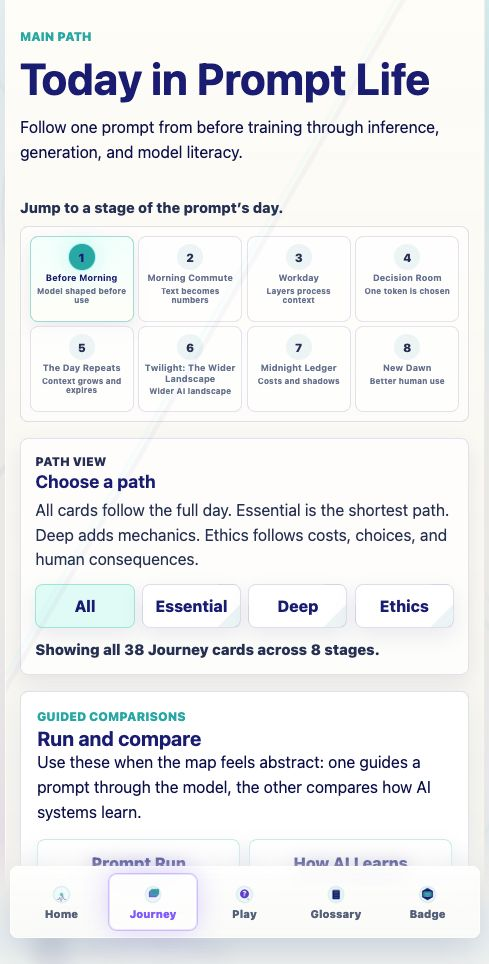
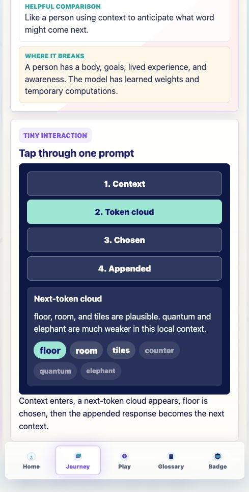
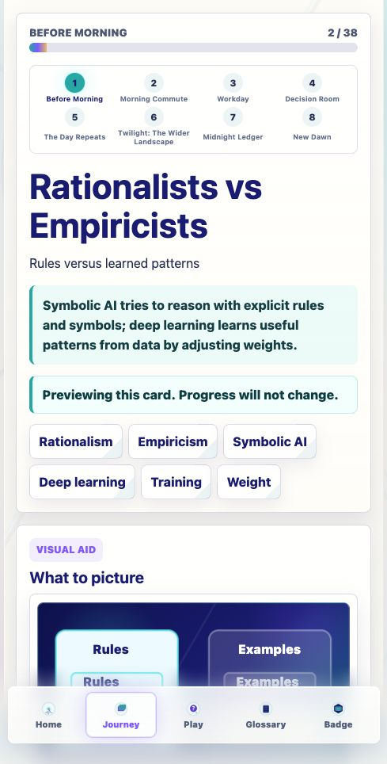
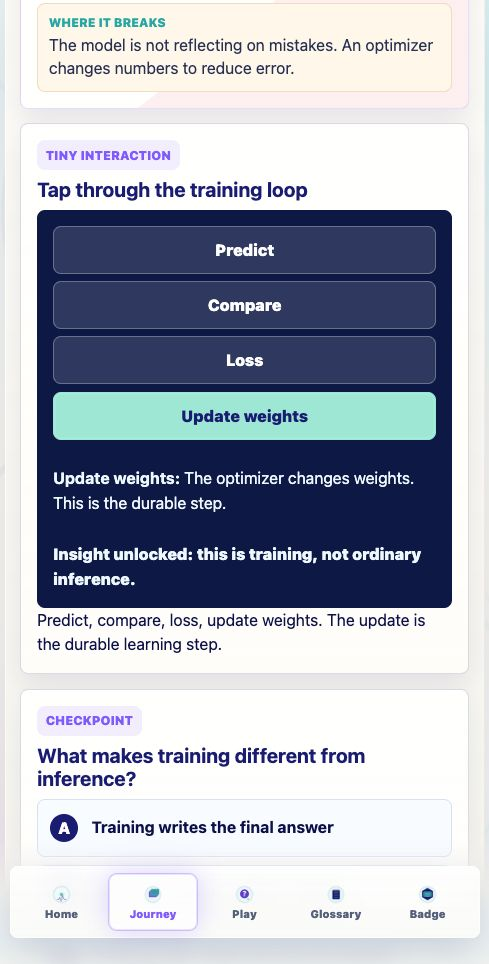
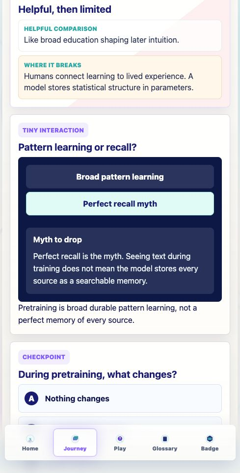
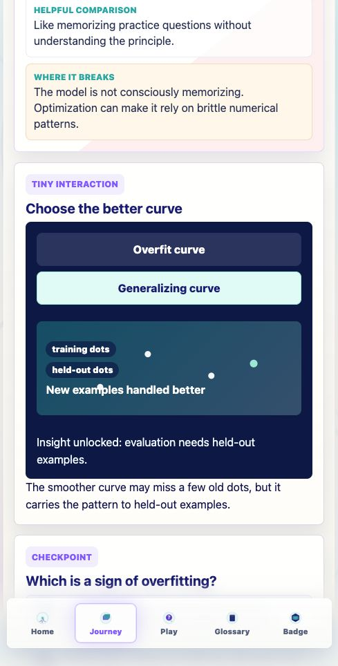
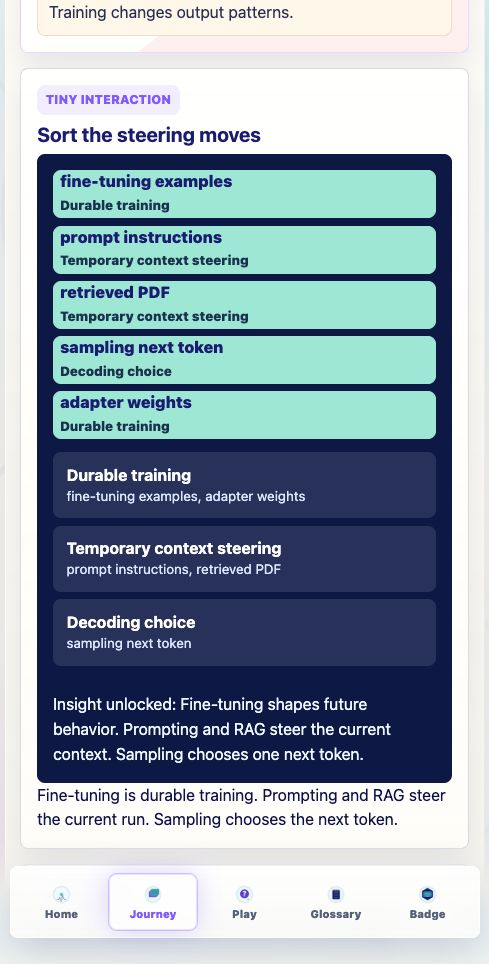
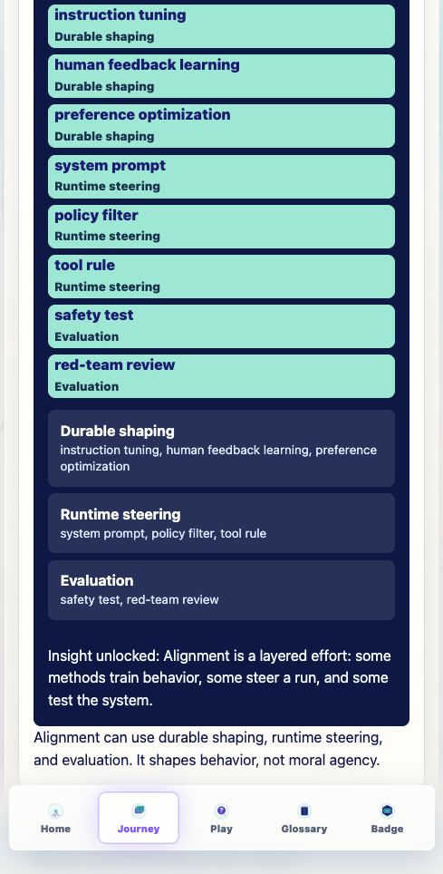
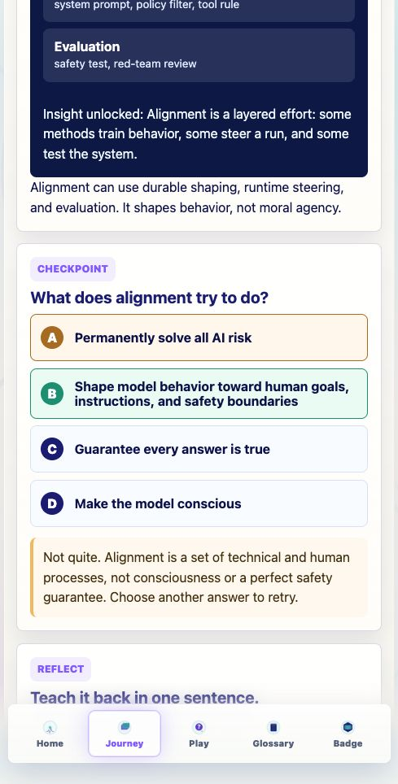
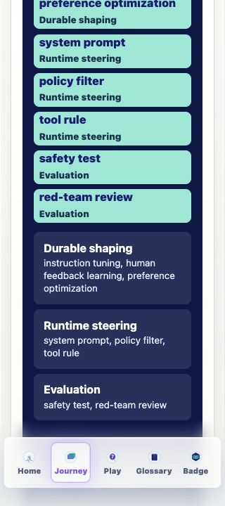
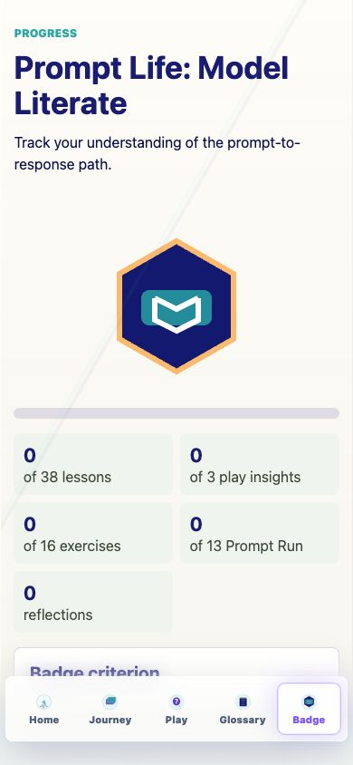